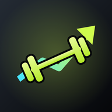

Pushing Steel
The gym tracker built for machines, on iPhone, iPad, Apple Watch and Mac.
Get help
Found a problem or have an idea? Tell us here (a free GitHub account is needed). We read every one.
Common questions
My workouts aren't on my other device
Check you're signed in to iCloud on both. In Pushing Steel, Settings → Your data shows “iCloud” when sync is on. New workouts can take a minute to arrive.
The Weight tab is empty
Weigh-ins come from the Health app. On iPhone, open Settings → Health → Data Access & Devices → Pushing Steel and allow Weight. On the Mac, weigh-ins appear once your iPhone has opened the app.
A deleted workout is still in Health
Pushing Steel doesn't remove workouts from the Health app; delete it there too.
My watch didn't start with my workout
Make sure the Pushing Steel watch app is installed and up to date, and that Settings → Start workouts on Apple Watch is on.
Assisted pull-ups and dips
On assisted machines you log the help you get (the counterweight or band). Less help is progress, and records count that way.